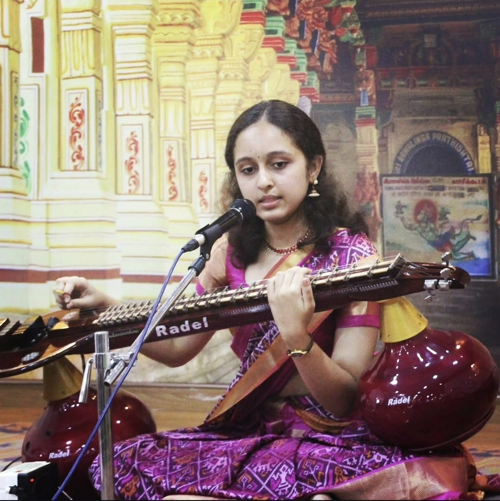
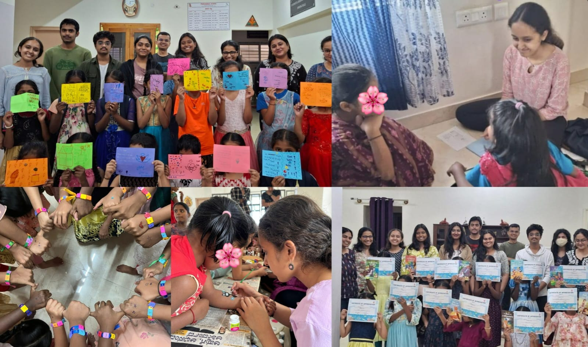

Beyond projects
Personal
A few things outside my technical work that have shaped how I spend my time and what I enjoy learning.

Music
I’ve been learning Carnatic music for more than a decade, through both vocal and the South Indian instrument Veena. I enjoy learning new compositions and continuing to improve at both.
Art
I enjoy making art in my free time, experimenting with different forms and styles.

Volunteering
I’ve volunteered as a teaching volunteer with U&I Trust and Students for Students, working with children on English and Mathematics.